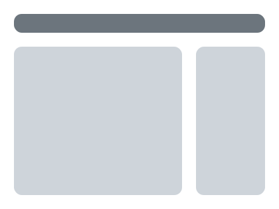

A project management template for Bootstrap 4
Pipeline is a collection of modular components and layouts for building project management and collaboration web apps.
this carousel
Project Management Pages
Pipeline makes building project management interfaces simple with pages for teams, projects, tasks, kanban boards and more.
this carousel
this carousel
Modular Components
Build feature-rich pages with everything Bootstrap 4.1.3 has to offer and extend functionality with Pipeline's suite of stylish custom components.


Flexible Layouts
Pipeline offers three distinct layouts to suit a variety of content types. Layouts are fully responsive and scale elegantally for different devices and screen sizes.
Familiar Tooling
Pipeline employs industry-standard development tools with an intuitive workflow designed to get you up and runnning faster.